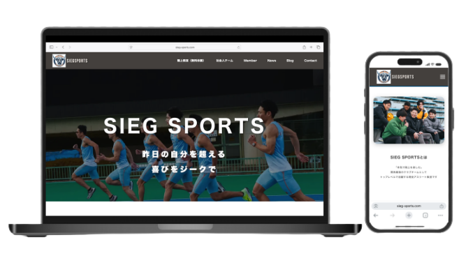

WORKS / WEB SITE
WEB SITE
社会人陸上チームの活動を伝える
オフィシャルWebサイト
大阪府を拠点に活動する社会人陸上チーム「SIEGSPORTS」の公式Webサイトを制作しました。
チーム紹介、メンバー紹介、試合結果、ブログ、動画、SNS、問い合わせ導線までをまとめ、
チームの魅力と活動内容が伝わるサイトを目指しました。

PROJECT
プロジェクト概要
SIEGSPORTSは、関西を中心に活動する社会人陸上チームです。
トップレベルで競技に取り組む現役アスリートの活動や、
チームとしての想いを発信するために公式Webサイトを制作しました。
写真を大きく使ったファーストビューや、メンバー紹介、News、Blog、Movie、SNS導線を設け、
チームの活動を多面的に伝えられる構成にしています。
CHALLENGE
課題
SOLUTION
実装内容
ファーストビュー
競技写真を大きく使い、チームの迫力や世界観が伝わるトップ画面を設計。
チーム紹介
SIEGSPORTSの活動内容やチームの特徴が伝わる紹介セクションを制作。
メンバー紹介
所属選手の魅力や実績を伝えるメンバーカードを実装。
News / Blog
試合結果や活動報告、陸上に関する情報発信ができる仕組みを設計。
Movie / SNS
YouTube動画や各SNSへの導線を設置し、発信力を高める構成に。
Contact / LINE
問い合わせフォームとLINE導線を設け、練習参加や入部希望につながる流れを整備。
DESIGN
デザインコンセプト
「挑戦」「成長」「信頼感」をテーマに設計しました。
スポーツらしい力強さを持ちながらも、初めて訪れた方でも見やすく、活動内容が伝わりやすいシンプルなデザインを採用しています。
POINT
制作ポイント
スポーツチームのWebサイトとして、写真の迫力と情報の見やすさを両立しました。
SNSだけでは流れてしまう情報をWebサイトに集約し、
チーム紹介、メンバー、試合結果、ブログ、動画、問い合わせまでを一つの導線として設計しています。
また、スマートフォンからの閲覧を前提に、見やすさと操作しやすさにも配慮しました。
RESULT
得られた効果
MESSAGE
現場を知っているからこそ
作れるWebサイト
SIEGSPORTSは私自身が運営しているチームです。
実際に運営する中で感じた課題や経験を活かし、見た目だけではなく「伝わること」「問い合わせにつながること」を大切にしています。
スポーツチーム運営の経験を活かし、
現場目線でWebサイトを制作します。
スポーツチーム・クラブ・スクール・教室運営者様向けの
Webサイト制作も対応しています。